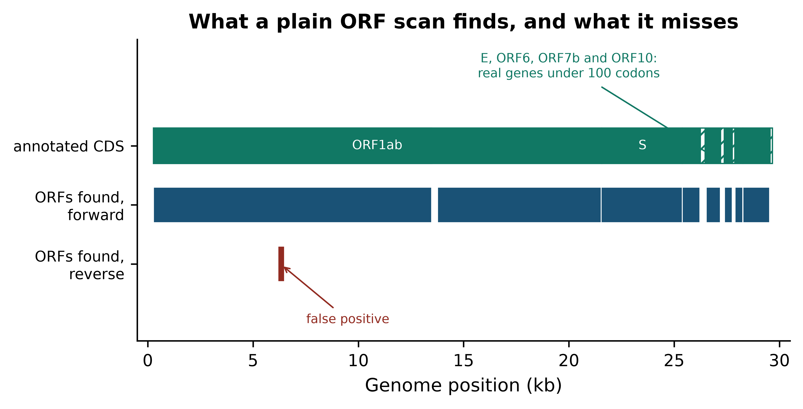
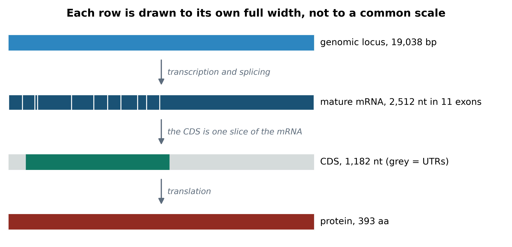
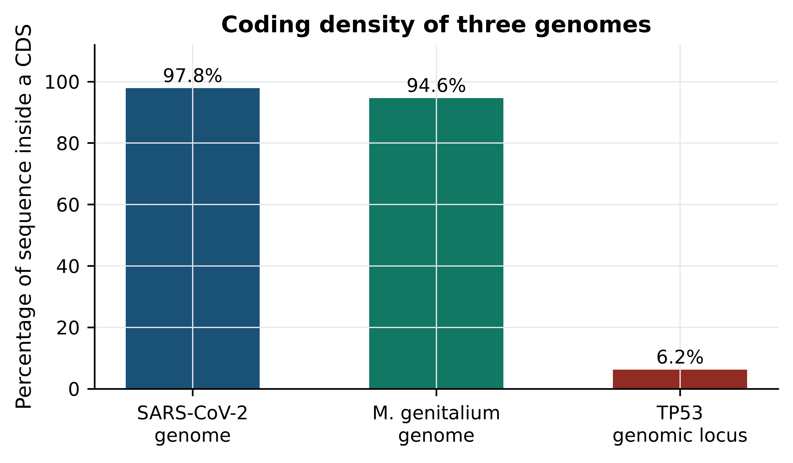

import sys; sys.path.insert(0, "..")
from pybfx import book_data, style, PALETTE
style()2 Molecular biology for people who analyse data
After working through this chapter you will be able to
- explain why strandedness and directionality cause silent errors, and take the reverse complement correctly
- translate a coding sequence in the right frame and diagnose a frameshifted translation from its output
- find open reading frames in a genome and judge which of them are genes by comparing them with an annotation
- extract a coding sequence from a GenBank record, translate it, and confirm the product against a protein database entry
- classify a sequence variant as an SNV, indel, synonymous, missense, nonsense or frameshift change, and say which of these a file format records
- convert between 1-based inclusive and 0-based half-open coordinates without introducing an off-by-one error
Nothing in this chapter is new biology. Every reader will have met DNA, the genetic code and the central dogma before. What is new is the reason for revisiting them: each concept is treated here as something that appears in a file, changes an analysis decision, or causes a specific bug. Strandedness is not a fact about the double helix; it is the reason your variant has the wrong allele. Reading frames are not a textbook diagram; they are the reason your translated protein begins with a plausible-looking sequence of amino acids that is entirely wrong.
The work is built around three bundled datasets. The SARS-CoV-2 reference genome (data/sequences/sars-cov-2-NC_045512.2.fasta and its GenBank counterpart) supplies a compact genome with a complete annotation, against which you will test your own open reading frame finder. The TP53 transcript record (data/sequences/TP53-NM_000546.6.gb) and the UniProt entry for human p53 (data/proteins/P04637.fasta) supply the chapter’s spine: you will take the coding sequence out of the GenBank record, translate it, and check that the result matches the protein that a separate database, curated independently, says the gene makes. When those 393 amino acids agree character for character, you will have demonstrated the central dogma computationally rather than been told about it.
The chapter ends with coordinate systems, which is the least glamorous topic in bioinformatics and the one that causes the most wasted days. A single misplaced base in a coordinate conversion produces output that looks completely normal and is completely wrong, and no error message will warn you.
2.1 Two strands, one file
A DNA molecule is two antiparallel chains held together by base pairing: adenine with thymine, guanine with cytosine. Each chain has a direction, conventionally written 5′ to 3′ after the carbon atoms of the deoxyribose sugar that carry the phosphate links. The two chains run in opposite directions, so the 5′ end of one sits opposite the 3′ end of the other.
A FASTA file contains one of those two chains, written 5′ to 3′. Which one? By convention, the one the database curators chose, and nothing in the file records why. For a viral genome it is the strand that carries the genes. For a chromosome it is an arbitrary choice made once and never revisited, which is why about half of human genes are annotated on the minus strand. The other chain is not stored, because it is completely determined by the first: reverse the sequence and complement every base.
from Bio.Seq import Seq
fragment = Seq("ATGGCATTAGC")
print(f"given 5'-{fragment}-3'")
#> given 5'-ATGGCATTAGC-3'
print(f"complement 3'-{fragment.complement()}-5'")
#> complement 3'-TACCGTAATCG-5'
print(f"rev. comp. 5'-{fragment.reverse_complement()}-3'")
#> rev. comp. 5'-GCTAATGCCAT-3'Three operations, three different answers, and only one of them is usually what you want. The complement alone is almost never useful, because it is written in the wrong direction: printed left to right it reads 3′ to 5′, and every tool that consumes it will assume 5′ to 3′. The reverse complement is the other strand written the way every file format expects it.
This is the source of a whole family of bugs that produce no error message. A primer designed from the wrong strand will not amplify. A variant reported as C>T on one strand is G>A on the other, so a comparison between a VCF file and a paper that used the opposite convention will show every single variant as discordant. A gene annotated on the minus strand must be extracted, then reverse complemented, before it can be translated — and if you forget the second step the translation will still produce amino acids, just the wrong ones.
A sequence has no memory of its strand
Nothing in a FASTA record states which strand it came from. If you extract a region from a minus-strand gene and pass it on, the strand information exists only in your code. Carry the strand explicitly in every data structure, name variables so the strand is visible (cds_plus_strand, not seq2), and reverse complement at the moment of extraction rather than three functions later.
Biopython’s feature objects carry the strand for you, which is one good reason to parse annotation files rather than to slice sequences by hand. The extract method of a feature takes the orientation into account and returns the sequence in the direction the gene is read.
2.2 The genetic code and reading frames
Translation reads the nucleotide sequence three bases at a time. Sixty-four codons encode twenty amino acids plus a stop signal, so the code is redundant: most amino acids have more than one codon, and third positions are frequently interchangeable. That redundancy is the reason a change in DNA need not change the protein, and it underlies the distinction between synonymous and non-synonymous variants that Section 2.7 depends on.
Because the code is read in triplets, a sequence has three possible starting points on each strand, and six in total. Only one of them is usually the real one.
from Bio import SeqIO
record = SeqIO.read(book_data("sequences", "sars-cov-2-NC_045512.2.fasta"), "fasta")
genome = record.seq
start_of_orf1ab = genome[265:325] # the first 60 bases of the replicase gene
for frame in range(3):
usable = start_of_orf1ab[frame: frame + 3 * ((len(start_of_orf1ab) - frame) // 3)]
print(f"frame +{frame + 1}: {usable.translate()}")
#> frame +1: MESLVPGFNEKTHVQLSLPV
#> frame +2: WRALSLVSTRKHTSNSVCL
#> frame +3: GEPCPWFQRENTRPTQFACOnly the first frame gives a translation that begins with methionine; the other two are perfectly well-formed strings of amino acids that correspond to no protein the virus has ever made. A reader who sees amino acids appear often assumes the translation worked. It always works — translation is a lookup table, and it has no way to tell you that you started in the wrong place. The diagnostic is not whether amino acids appear but whether the product starts with M, ends at a single stop, and contains no internal stop codons.
Three codons act as stops (TAA, TAG and TGA in DNA) and one, ATG, normally serves as both the start and the codon for methionine. A run of codons that begins with ATG, proceeds in one frame with no stop codon, and ends at a stop is an open reading frame (ORF). The expected length of an ORF arising purely by chance follows from the stop codon frequency: in a random sequence with the base composition of SARS-CoV-2, about one codon in fifteen is a stop, so chance ORFs of a few dozen codons are common and ones of several hundred codons are not.
Genetic codes, plural
The standard code is not universal. Vertebrate mitochondria read TGA as tryptophan rather than stop, and several bacteria and ciliates reassign other codons. Biopython exposes these as numbered translation tables, and translate(table=2) will give a different and correct answer for a mitochondrial gene. Using the default table on mitochondrial DNA produces proteins truncated at the first TGA, which is a common and easily missed error.
2.3 Finding open reading frames, and checking them
An ORF finder is a short piece of code, and writing one is the fastest way to understand what gene prediction does and does not achieve. The function below scans all six frames and returns every ORF above a length threshold.
def find_orfs(sequence, min_codons=100):
"""Return (start, end, strand, length_in_codons) for ORFs in all six frames.
Coordinates are 0-based half-open on the forward strand, so that
sequence[start:end] returns the ORF including its stop codon.
"""
found, length = [], len(sequence)
for strand, working in ((1, sequence), (-1, sequence.reverse_complement())):
for frame in range(3):
usable = working[frame: frame + 3 * ((length - frame) // 3)]
protein = str(usable.translate())
cursor = 0
while (stop := protein.find("*", cursor)) != -1:
first_met = protein.find("M", cursor, stop)
if first_met != -1 and stop - first_met >= min_codons:
left, right = frame + first_met * 3, frame + stop * 3 + 3
if strand == -1:
left, right = length - right, length - left
found.append((left, right, strand, stop - first_met))
cursor = stop + 1
return sorted(found)
predicted = find_orfs(genome, min_codons=100)
print(f"{len(predicted)} ORFs of at least 100 codons")
#> 9 ORFs of at least 100 codonsNine candidates. The only way to know whether they are genes is to compare them with an annotation produced by people who had evidence beyond sequence. The bundled GenBank record for the same accession carries that annotation as CDS features.
genbank = SeqIO.read(book_data("sequences", "sars-cov-2-NC_045512.2.gb"), "genbank")
annotated = [feature for feature in genbank.features if feature.type == "CDS"]
print(f"{len(annotated)} annotated CDS features")
#> 12 annotated CDS features
for feature in annotated:
gene = feature.qualifiers["gene"][0]
codons = len(feature.location) // 3 - 1
print(f" {gene:<7} {int(feature.location.start):>6,}-{int(feature.location.end):<6,} {codons:>5,} codons")
#> ORF1ab 265-21,555 7,096 codons
#> ORF1ab 265-13,483 4,405 codons
#> S 21,562-25,384 1,273 codons
#> ORF3a 25,392-26,220 275 codons
#> E 26,244-26,472 75 codons
#> M 26,522-27,191 222 codons
#> ORF6 27,201-27,387 61 codons
#> ORF7a 27,393-27,759 121 codons
#> ORF7b 27,755-27,887 43 codons
#> ORF8 27,893-28,259 121 codons
#> N 28,273-29,533 419 codons
#> ORF10 29,557-29,674 38 codonsTwo features of that table deserve attention before any comparison. First, ORF1ab and ORF1a overlap almost entirely: they are two products of the same stretch of sequence, because a ribosomal frameshift near position 13,468 lets the ribosome slip back one base and continue in a different frame. The GenBank location for ORF1ab is a join of two intervals whose coordinates overlap by one base, which is how the format records exactly that event. Second, four of the genes are shorter than 100 codons, so no threshold-based ORF scan set at 100 will find them.
orf1ab = annotated[0]
print(f"location : {orf1ab.location}")
#> location : join{[265:13468](+), [13467:21555](+)}
print(f"parts : {[(int(p.start), int(p.end)) for p in orf1ab.location.parts]}")
#> parts : [(265, 13468), (13467, 21555)]
print(f"joined : {len(orf1ab.location):,} nt -> {len(orf1ab.location) // 3 - 1:,} codons")
#> joined : 21,291 nt -> 7,096 codonsNow compare the two sets. Because a predicted start codon may sit upstream of the annotated one, the reliable key for matching an ORF to a CDS is the stop position, which is fixed by the frame.
annotated_ends = {int(f.location.parts[-1].end): f.qualifiers["gene"][0] for f in annotated}
predicted_ends = {end for _, end, strand, _ in predicted if strand == 1}
matched = sorted({annotated_ends[end] for end in predicted_ends & set(annotated_ends)})
missed = sorted({gene for end, gene in annotated_ends.items() if end not in predicted_ends})
spurious = [(left, right) for left, right, strand, _ in predicted if strand == -1]
print(f"matched ({len(matched)}): {', '.join(matched)}")
#> matched (7): M, N, ORF1ab, ORF3a, ORF7a, ORF8, S
print(f"missed ({len(missed)}): {', '.join(missed)}")
#> missed (4): E, ORF10, ORF6, ORF7b
print(f"reverse-strand predictions with no annotation: {spurious}")
#> reverse-strand predictions with no annotation: [(6186, 6489)]The scan recovers most of the genome’s genes, misses every gene below the length threshold, and produces one prediction on the strand that carries nothing. Figure 2.1 draws the comparison.
import matplotlib.pyplot as plt
fig, ax = plt.subplots(figsize=(6.2, 3.2))
for feature in annotated:
left, right = int(feature.location.start), int(feature.location.end)
gene = feature.qualifiers["gene"][0]
not_found = int(feature.location.parts[-1].end) not in predicted_ends and gene != "ORF1ab"
ax.add_patch(plt.Rectangle((left / 1000, 1.05), (right - left) / 1000, 0.30,
facecolor="white" if not_found else PALETTE[1],
hatch="///" if not_found else "",
edgecolor=PALETTE[1], linewidth=0.7))
for left, right, strand, codons in predicted:
row = 0.55 if strand == 1 else 0.05
ax.add_patch(plt.Rectangle((left / 1000, row), (right - left) / 1000, 0.30,
facecolor=PALETTE[0] if strand == 1 else PALETTE[3],
edgecolor="white", linewidth=0.5))
for gene, midpoint in (("ORF1ab", 10.9), ("S", 23.5)):
ax.text(midpoint, 1.20, gene, ha="center", va="center", fontsize=7, color="white")
ax.annotate("E, ORF6, ORF7b and ORF10:\nreal genes under 100 codons", xy=(27.4, 1.05),
xytext=(20.0, 1.78), fontsize=6.8, color=PALETTE[1], ha="center",
arrowprops=dict(arrowstyle="->", color=PALETTE[1], linewidth=0.8))
ax.annotate("false positive", xy=(6.3, 0.2), xytext=(9.5, -0.30), fontsize=6.8,
color=PALETTE[3], ha="center",
arrowprops=dict(arrowstyle="->", color=PALETTE[3], linewidth=0.8))
ax.set_yticks([1.20, 0.70, 0.20])
ax.set_yticklabels(["annotated CDS", "ORFs found,\nforward", "ORFs found,\nreverse"], fontsize=8)
ax.set_ylim(-0.45, 2.1); ax.set_xlim(-0.5, 30.5); ax.set_xlabel("Genome position (kb)")
ax.set_title("What a plain ORF scan finds, and what it misses")
ax.grid(False)
fig.tight_layout()
Two conclusions follow, and they generalise far beyond this genome. First, a length threshold trades false positives against false negatives and there is no setting that avoids both: lower it to catch ORF10 at 38 codons and the reverse strand fills with noise. Second, real annotation uses evidence that sequence alone does not contain — ribosome profiling, transcript data, similarity to known proteins, and models of codon usage trained on confirmed genes. Production gene finders for prokaryotes work this way (Hyatt et al. 2010), as do eukaryotic predictors that must additionally model splice sites (Stanke et al. 2006). Your ORF finder is a filter that proposes candidates, not an annotator.
One more discrepancy is instructive. The scan places the start of the spike gene nine codons upstream of the annotated start, because there is an in-frame ATG before the real one. Choosing among in-frame start codons is a genuinely hard problem, and getting it wrong shifts the N-terminus of the predicted protein without affecting anything downstream — the kind of error that survives into a database and is then propagated by everyone who downloads it.
2.4 From gene to transcript to protein
The SARS-CoV-2 genome is unusually cooperative: it is 97.8% coding and has no introns. A human gene behaves differently, and the difference is the single most important thing a data analyst needs to know about eukaryotic gene structure. A gene occupies a span of chromosome; transcription copies that span into a precursor RNA; splicing removes the introns and joins the exons; the mature mRNA that results is far shorter than the genomic span, and only part of it is translated.
The bundled record TP53-NM_000546.6.gb is the mature mRNA for the canonical TP53 transcript, with the exon boundaries annotated on it. Start by taking it apart.
transcript = SeqIO.read(book_data("sequences", "TP53-NM_000546.6.gb"), "genbank")
exons = [feature for feature in transcript.features if feature.type == "exon"]
coding = next(feature for feature in transcript.features if feature.type == "CDS")
print(f"transcript : {transcript.id}, {len(transcript):,} nt")
#> transcript : NM_000546.6, 2,512 nt
print(f"exons : {len(exons)}")
#> exons : 11
print(f"CDS : {int(coding.location.start):,}-{int(coding.location.end):,} "
f"({len(coding.location):,} nt)")
#> CDS : 142-1,324 (1,182 nt)
print(f"5' UTR : {int(coding.location.start):,} nt")
#> 5' UTR : 142 nt
print(f"3' UTR : {len(transcript) - int(coding.location.end):,} nt")
#> 3' UTR : 1,188 nt
# kept for the figure and for later sections
exon_bounds = [(int(e.location.start), int(e.location.end)) for e in exons]
cds_start, cds_end = int(coding.location.start), int(coding.location.end)The mRNA is 2,512 nt assembled from 11 exons, and fewer than half of those nucleotides are translated: 142 nt of 5′ untranslated region precede the start codon and 1,188 nt of 3′ untranslated region follow the stop. That asymmetry matters in practice. An RNA-seq read mapping to the 3′ UTR counts towards the gene’s expression but tells you nothing about the protein; a variant in the 5′ UTR cannot be missense, because there is no codon for it to change.
How long is the genomic span that this 2,512 nt mRNA came from? The bundled ClinVar file answers the question with data rather than assertion, because it contains variants reported across the whole TP53 locus in genomic coordinates (Landrum et al. 2017).
positions = []
with open(book_data("variants", "tp53_clinvar.vcf")) as handle:
for line in handle:
if not line.startswith("#"):
chromosome, position = line.split("\t", 2)[:2]
positions.append(int(position))
span = max(positions) - min(positions) + 1
print(f"{len(positions):,} ClinVar records on chromosome {chromosome}")
#> 3,888 ClinVar records on chromosome 17
print(f"spanning {min(positions):,}-{max(positions):,} = {span:,} bp of genome")
#> spanning 7,668,434-7,687,471 = 19,038 bp of genome
print(f"mRNA is {len(transcript):,} nt, i.e. {100 * len(transcript) / span:.1f}% of the locus")
#> mRNA is 2,512 nt, i.e. 13.2% of the locusAbout 19 kb of chromosome produce a 2.5 kb message, of which 1,182 nt are translated. This is the reason that the genomic coordinates of a variant and its position in a transcript are different numbers, that converting between them requires the exon structure, and that tools which do the conversion need an annotation file and a version of it. Figure 2.2 shows the four levels together.
fig, ax = plt.subplots(figsize=(6.2, 3.0))
ax.add_patch(plt.Rectangle((0, 3.05), 1.0, 0.26, facecolor=PALETTE[5]))
ax.text(1.02, 3.18, f"genomic locus, {span:,} bp", va="center", fontsize=7.5)
for left, right in exon_bounds:
ax.add_patch(plt.Rectangle((left / 2512, 2.05), (right - left) / 2512, 0.26,
facecolor=PALETTE[0], edgecolor="white", linewidth=0.8))
ax.text(1.02, 2.18, f"mature mRNA, {len(transcript):,} nt in {len(exons)} exons",
va="center", fontsize=7.5)
ax.add_patch(plt.Rectangle((0, 1.05), cds_start / 2512, 0.26, facecolor="#D5DBDB"))
ax.add_patch(plt.Rectangle((cds_start / 2512, 1.05), (cds_end - cds_start) / 2512, 0.26,
facecolor=PALETTE[1]))
ax.add_patch(plt.Rectangle((cds_end / 2512, 1.05), (len(transcript) - cds_end) / 2512, 0.26,
facecolor="#D5DBDB"))
ax.text(1.02, 1.18, f"CDS, {cds_end - cds_start:,} nt (grey = UTRs)", va="center", fontsize=7.5)
ax.add_patch(plt.Rectangle((0, 0.05), 1.0, 0.26, facecolor=PALETTE[3]))
ax.text(1.02, 0.18, f"protein, {len(coding.location) // 3 - 1} aa", va="center", fontsize=7.5)
for row, caption in ((3.05, "transcription and splicing"),
(2.05, "the CDS is one slice of the mRNA"),
(1.05, "translation")):
ax.annotate("", xy=(0.5, row - 0.12), xytext=(0.5, row - 0.62),
arrowprops=dict(arrowstyle="<|-", color="#5D6D7E", linewidth=1.0))
ax.text(0.52, row - 0.37, caption, fontsize=6.8, style="italic", color="#5D6D7E", va="center")
ax.set_xlim(0, 1.62); ax.set_ylim(-0.1, 3.5); ax.axis("off"); ax.grid(False)
#> (0.0, 1.62)
#> (-0.1, 3.5)
#> (np.float64(0.0), np.float64(1.62), np.float64(-0.1), np.float64(3.5))
ax.set_title("Each row is drawn to its own full width, not to a common scale", fontsize=9)
fig.tight_layout()
Now close the loop. Extract the coding sequence, translate it, and compare the result with the independently curated UniProt entry for human p53 (Bateman et al. 2022). If the central dogma holds and both databases are right, the two sequences will be identical.
coding_sequence = coding.extract(transcript.seq)
protein = coding_sequence.translate(to_stop=True)
reference = SeqIO.read(book_data("proteins", "P04637.fasta"), "fasta")
print(f"CDS : {len(coding_sequence):,} nt")
#> CDS : 1,182 nt
print(f"translated : {len(protein)} aa, starts {protein[:10]}...")
#> translated : 393 aa, starts MEEPQSDPSV...
print(f"UniProt P04637 : {len(reference.seq)} aa, starts {reference.seq[:10]}...")
#> UniProt P04637 : 393 aa, starts MEEPQSDPSV...
print(f"identical : {str(protein) == str(reference.seq)}")
#> identical : TrueThe sequences match exactly across all 393 residues. That single True is worth more than a page of description: it says that the exon structure in the GenBank record, the position of the start codon, the reading frame, the genetic code, and the curation decisions of two different databases are all mutually consistent. When you build any pipeline that goes from nucleotides to protein, this comparison is the test that catches a frame error, an off-by-one in a coordinate, or a transcript version mismatch — and it is cheap enough to run every time.
Translate and compare as a routine check
Whenever you extract a coding sequence, assert three things before trusting it: its length is a multiple of three, it begins with a start codon, and it contains exactly one stop codon, at the end. If a reference protein exists, compare against it. Each check is one line and each catches a different class of error.
2.5 Proteins as sequences and as shapes
For most of this book a protein is a string over a twenty-letter alphabet, and that representation is enough for database search, alignment and phylogenetics. Three further levels matter when later chapters move to structure.
The primary structure is the amino acid sequence itself, which is what you just produced. Secondary structure is the local, repeating folding of the backbone into helices and strands, stabilised by hydrogen bonds, and assignable from atomic coordinates by a standard algorithm (Kabsch and Sander 1983). Tertiary structure is the three-dimensional arrangement of the whole chain, and quaternary structure is the assembly of several chains into a functional complex — p53 is a relevant example, since it binds DNA as a tetramer (Cho et al. 1994).
The practical consequence for a data analyst is this: a change of one amino acid has effects that depend entirely on where that residue sits in the folded structure. A substitution on a flexible surface loop is often tolerated; the same chemical change in the hydrophobic core or in a DNA-contacting residue is not. This is why variant interpretation tools use structural and conservation information rather than the substitution alone, and why the structural chapter of this book uses the bundled p53 structures. Experimental structures are deposited in the Protein Data Bank (Berman 2000), whose first entries followed the determination of myoglobin (Kendrew et al. 1958); predicted structures covering nearly every known protein are now available alongside them (Jumper et al. 2021).
2.6 Genome organisation and compositional signals
Genomes differ enormously in how much of their sequence does anything. The bundled data makes the point directly: Mycoplasmoides genitalium has one of the smallest known bacterial genomes, with its annotation supplied as a GFF3 file.
import numpy as np
import pandas as pd
columns = ["seqid", "source", "type", "start", "end", "score", "strand", "phase", "attributes"]
gff = pd.read_csv(book_data("annotation", "mycoplasma-genitalium.gff"),
sep="\t", comment="#", header=None, names=columns)
bacterium = SeqIO.read(book_data("sequences", "mycoplasma-genitalium-NC_000908.2.fasta"), "fasta")
def coding_density(genome_length, intervals):
"""Percentage of a genome covered by at least one coding interval."""
covered = np.zeros(genome_length, dtype=bool)
for left, right in intervals:
covered[left:right] = True
return 100 * covered.sum() / genome_length
bacterial_cds = gff.loc[gff["type"] == "CDS", ["start", "end"]]
bacterial_density = coding_density(len(bacterium.seq),
zip(bacterial_cds["start"] - 1, bacterial_cds["end"]))
viral_density = coding_density(len(genome),
[(int(p.start), int(p.end)) for f in annotated for p in f.location.parts])
locus_density = 100 * (cds_end - cds_start) / span
print(f"M. genitalium : {len(bacterial_cds):>4,} CDS, {bacterial_density:.1f}% coding")
#> M. genitalium : 524 CDS, 94.6% coding
print(f"SARS-CoV-2 : {len(annotated):>4,} CDS, {viral_density:.1f}% coding")
#> SARS-CoV-2 : 12 CDS, 97.8% coding
print(f"TP53 locus : 1 CDS, {locus_density:.1f}% coding")
#> TP53 locus : 1 CDS, 6.2% codingFigure 2.3 shows the three side by side. The contrast is not a curiosity: it determines how you analyse each one. In a 95% coding genome, almost any read that maps maps inside a gene, assembly is straightforward, and a simple ORF scan is nearly sufficient for annotation. In a human locus, 94% of the sequence is introns, regulatory elements and repeats; reads must be aligned with a method that permits a read to span an intron, and annotation is a modelling problem rather than a scanning one.
fig, ax = plt.subplots(figsize=(5.4, 3.2))
names = ["SARS-CoV-2\ngenome", "M. genitalium\ngenome", "TP53\ngenomic locus"]
values = [viral_density, bacterial_density, locus_density]
bars = ax.bar(names, values, color=[PALETTE[0], PALETTE[1], PALETTE[3]], width=0.55)
for bar, value in zip(bars, values):
ax.text(bar.get_x() + bar.get_width() / 2, value + 2, f"{value:.1f}%", ha="center", fontsize=9)
ax.set_ylabel("Percentage of sequence inside a CDS")
ax.set_ylim(0, 112)
#> (0.0, 112.0)
ax.set_title("Coding density of three genomes")
fig.tight_layout()
The non-coding majority of a eukaryotic genome is not empty. A large fraction of it is repetitive: transposable element copies, tandem arrays of short units, and segmental duplications. Repeats are the reason short-read assembly produces fragmented results, the reason reads from repeat families map ambiguously to many locations, and the reason the human reference took until long-read sequencing to be finished at the centromeres (Nurk et al. 2022), and part of the reason a single reference sequence is being replaced by a graph of many (Liao et al. 2023).
Base composition is the other signal that costs nothing to compute and frequently repays the effort.
from Bio.SeqUtils import gc_fraction
for label, sequence in (("SARS-CoV-2 genome", genome),
("M. genitalium genome", bacterium.seq),
("TP53 mRNA", transcript.seq)):
print(f"{label:<22} {len(sequence):>8,} nt GC {100 * gc_fraction(sequence):5.2f}%")
#> SARS-CoV-2 genome 29,903 nt GC 37.97%
#> M. genitalium genome 580,076 nt GC 31.69%
#> TP53 mRNA 2,512 nt GC 53.38%A GC content of 32% in M. genitalium and 38% in SARS-CoV-2 against 53% in the TP53 transcript reflects a real distinction: coding exons in GC-rich vertebrate genes are compositionally unlike AT-rich microbial genomes. Composition is therefore usable as a crude classifier. An unexpected GC value in a contig suggests contamination or misassembly; an abrupt compositional shift within a bacterial genome often marks horizontally acquired sequence such as a pathogenicity island or an integrated plasmid.
2.7 The vocabulary of variation
Two genomes of the same species differ in millions of places, and the vocabulary for those differences is used consistently across the field. It divides along two independent axes: what changed in the DNA, and what the change does to a protein.
By what changed in the DNA:
- A single-nucleotide variant (SNV) replaces one base with another. In a population context, a common SNV is often called a single-nucleotide polymorphism (SNP).
- An insertion or deletion, together indels, add or remove bases. Short indels are handled by variant callers and written in the VCF format, whose representation of indels is a frequent source of confusion (Danecek et al. 2011); longer ones are structural variants.
- A copy-number variant (CNV) duplicates or deletes a segment large enough to change how many copies of whole genes are present.
By what the change does to a coding sequence:
- A synonymous change alters a codon without altering the amino acid, exploiting the redundancy of the genetic code.
- A missense change substitutes one amino acid for another.
- A nonsense change creates a premature stop codon, truncating the protein.
- A frameshift results from an indel whose length is not a multiple of three; every codon downstream is read in a different frame, so the remainder of the protein is unrelated to the original and usually terminates early.
The bundled ClinVar slice shows how these classes occur in practice for one clinically important gene.
from collections import Counter
by_dna, by_effect = Counter(), Counter()
with open(book_data("variants", "tp53_clinvar.vcf")) as handle:
for line in handle:
if line.startswith("#"):
continue
fields = line.rstrip("\n").split("\t")
reference_allele, alternate_allele, info = fields[3], fields[4], fields[7]
if len(reference_allele) == len(alternate_allele) == 1:
by_dna["SNV"] += 1
elif len(reference_allele) > len(alternate_allele):
by_dna["deletion"] += 1
elif len(reference_allele) < len(alternate_allele):
by_dna["insertion"] += 1
else:
by_dna["complex"] += 1
for annotation in dict(pair.split("=", 1) for pair in info.split(";") if "=" in pair).get("MC", "").split(","):
if "|" in annotation:
by_effect[annotation.split("|")[1]] += 1
print("by change in DNA:", dict(by_dna))
#> by change in DNA: {'SNV': 2745, 'deletion': 744, 'insertion': 327, 'complex': 72}
for effect, count in by_effect.most_common(6):
print(f" {effect:<30} {count:>5,}")
#> missense_variant 1,516
#> non-coding_transcript_variant 856
#> intron_variant 688
#> 5_prime_UTR_variant 673
#> frameshift_variant 650
#> synonymous_variant 513Missense changes dominate, as they must: most positions in a codon can be changed to something that still encodes an amino acid. Frameshift and nonsense records together number fewer than half the missense ones, but they carry disproportionate clinical weight, because a truncated p53 protein is almost always non-functional whereas many missense changes are tolerated. Note also the large number of intronic and untranslated-region records, which exist only because the variants were called in genomic coordinates: a transcript-only analysis would never see them. Whether any individual record is clinically meaningful is a separate judgement, made against published classification criteria (Richards et al. 2015) and against how often the variant is seen in large population surveys (Karczewski et al. 2020) — the clinical chapter of this book works through that process in full.
To make the frameshift definition concrete, delete a single base from the TP53 coding sequence and translate the result.
intact = coding.extract(transcript.seq)
frameshifted = intact[:30] + intact[31:] # delete the base at CDS position 31
print(f"intact : {intact.translate(to_stop=True)[:20]}... ({len(intact.translate(to_stop=True))} aa)")
#> intact : MEEPQSDPSVEPPLSQETFS... (393 aa)
truncated = frameshifted.translate(to_stop=True)
print(f"frameshifted : {truncated[:20]}... ({len(truncated)} aa)")
#> frameshifted : MEEPQSDPSVSPL... (13 aa)Ten residues of correct protein, then a short stretch that belongs to no p53, then a stop: 13 amino acids in place of 393, from a one-base difference in a 1,182 nt file. This is the mechanism behind the clinical importance of frameshift variants, and the reason variant callers report the length of an indel rather than only its position.
2.8 Coordinate systems and the off-by-one error
Bioinformatics uses two incompatible conventions for numbering positions, and files move between tools that assume different ones.
1-based, fully closed. The first base is position 1, and a range includes both endpoints. A feature at 10–20 is eleven bases long. This is the convention of GenBank, GFF3, GTF, SAM, VCF and the display in a genome browser.
0-based, half-open. The first base is position 0, and a range includes its start but excludes its end. A feature at 9–20 is eleven bases long. This is the convention of BED files, BAM internals, the UCSC browser’s internal coordinates, and Python slicing.
The conversion in one direction is simple: subtract one from the start and leave the end alone. The difficulty is that neither convention is marked anywhere in the data. A BED file and a GFF3 file describing the same exon contain different numbers, both correct.
Here is what happens when the conversion is omitted. The nucleocapsid gene of SARS-CoV-2 is given in the GenBank record as 28,274–29,533 in 1-based inclusive coordinates.
naive = genome[28274:29533] # 1-based start used directly as a Python index
correct = genome[28274 - 1:29533] # convert: subtract one from the start
print(f"naive : {len(naive):,} nt, begins {naive[:9]}, {len(naive) % 3} nt left over")
#> naive : 1,259 nt, begins TGTCTGATA, 2 nt left over
print(f"correct : {len(correct):,} nt, begins {correct[:9]}, {len(correct) % 3} nt left over")
#> correct : 1,260 nt, begins ATGTCTGAT, 0 nt left over
print(f"naive translation : {naive.translate()[:8]}...")
#> naive translation : CLIMDPKI...
print(f"correct translation : {correct.translate()[:8]}... ending {correct.translate()[-1]}")
#> correct translation : MSDNGPQN... ending *The naive slice loses the first base. It is 1,259 nt rather than 1,260, so it is not a multiple of three; it does not begin with a start codon; and it translates into a protein that begins CLIMDP, which is a perfectly well-formed string of amino acids and completely wrong. Nothing raised an error. Had you taken this sequence forward into a BLAST search you would have obtained weak hits, concluded that the gene was divergent, and wasted a day.
Coordinates are not interchangeable
Whenever a coordinate crosses a tool boundary, write down which convention it is in. Three habits prevent nearly every instance of this bug: use library objects that carry the convention with them, such as Biopython’s SeqFeature or Bioconductor’s GRanges (Lawrence et al. 2013), rather than raw integers; check that an extracted coding sequence has a length divisible by three and begins with a start codon; and when you convert by hand, verify the conversion on a feature whose sequence you already know. The symptom of getting this wrong is never an error message — it is a result that looks reasonable.
The robust alternative is to let the parser do it. Biopython converts GenBank’s 1-based inclusive locations to 0-based half-open SeqFeature locations when it reads the file, and extract applies them correctly, including reverse complementation for minus-strand features. That is why the TP53 translation earlier in this chapter needed no arithmetic at all, and why the recommendation throughout this book is to parse annotation rather than to slice by hand.
2.9 Summary
- A FASTA record stores one strand with no record of which; strand must be carried explicitly in your code, and the reverse complement — not the complement — is what every file format expects.
- Translation never fails, so a plausible-looking protein is not evidence of a correct reading frame. Check for an initial methionine, a single terminal stop, and no internal stops.
- An ORF scan proposes candidates. Compared with the SARS-CoV-2 annotation, a 100-codon threshold recovers the long genes, misses four real genes that are shorter, and produces a chance hit on the empty strand.
- GenBank join locations record real biology, such as the ribosomal frameshift that makes two polyproteins from one stretch of the SARS-CoV-2 genome; a parser that ignores them will translate the wrong product.
- A human gene’s genomic span, its mRNA and its coding sequence are three different lengths: roughly 19 kb, 2,512 nt and 1,182 nt for TP53. Coordinates in one are not coordinates in another.
- Translating the TP53 CDS reproduces UniProt P04637 exactly, which is both a demonstration of the central dogma and the cheapest available test of a nucleotide-to-protein pipeline.
- Coding density separates analysis strategies: about 95% coding for compact microbial genomes against 6% for a human locus, which is why eukaryotic annotation and alignment need intron-aware methods.
- Variant vocabulary divides into what changed in the DNA (SNV, indel, CNV) and what it does to the protein (synonymous, missense, nonsense, frameshift); a one-base deletion in TP53 reduces a 393-residue protein to a short fragment.
- 1-based inclusive and 0-based half-open coordinates differ by one at the start and never announce themselves. Verify any hand-made conversion against a sequence you already know.
2.10 Exercises
Write down the reverse complement of
5'-TTACGGATC-3'by hand, then confirm it with Biopython. State in one sentence why the complement alone would be the wrong answer.Translate the first 30 bases of the SARS-CoV-2 spike gene in all three forward frames and say which frame is correct and how you can tell without consulting the annotation.
Re-run
find_orfswithmin_codons=38and count how many ORFs are returned. Does ORF10 now appear? What has the change cost you?Using the GenBank record, extract the envelope (E) protein coding sequence with
feature.extract, translate it, and report its length. Confirm that the length agrees with the number of codons implied by the feature’s location.The TP53 3′ untranslated region is 1,188 nt long. Explain why a variant there can still affect how much p53 protein a cell makes, even though it cannot change the amino acid sequence.
Compute the GC content of the TP53 coding sequence alone and compare it with the GC content of the whole transcript. Which part of the mRNA is more GC-rich, and what does that suggest about where in the mRNA a GC-biased sequencing protocol would lose coverage?
Write a function
check_cds(sequence)that raises a descriptive error unless the sequence has a length divisible by three, starts withATG, and contains exactly one stop codon at its end. Test it on the correct and the off-by-one nucleocapsid slices from Section 2.8.A collaborator sends a BED file with the line
NC_045512.2 28273 29533 N. Convert that interval to the 1-based inclusive coordinates a GenBank record would use, and confirm by extracting both and comparing the sequences.Using the ClinVar counts computed in Section 2.7, explain why the number of missense records is roughly three times the number of synonymous records even though a random change to a random codon is synonymous surprisingly often.
2.11 Solutions
Solutions
1. The reverse complement is GATCCGTAA. The complement alone, AATGCCTAG, is the correct base pairing but written 3′ to 5′; every tool reading it left to right would interpret it as a 5′ to 3′ sequence and therefore as a different molecule.
print(Seq("TTACGGATC").reverse_complement())
#> GATCCGTAA2. The first frame is correct: it alone begins with methionine, and the product MFVFLVLLPL is the start of the spike protein. The other two frames translate without error and without stop codons, which is precisely the point — the absence of an initial methionine is the only signal available from the sequence itself.
spike = next(f for f in annotated if f.qualifiers["gene"][0] == "S")
head = spike.extract(genbank.seq)[:30]
for frame in range(3):
usable = head[frame: frame + 3 * ((len(head) - frame) // 3)]
print(f"frame +{frame + 1}: {usable.translate()}")
#> frame +1: MFVFLVLLPL
#> frame +2: CLFFLFYCH
#> frame +3: VCFSCFIAT3. Lowering the threshold to 38 codons recovers ORF10 and every other short gene, so all eleven annotated genes are now found. The cost is precision: the output grows from 9 predictions to 76, so roughly six in seven are chance reading frames or alternative starts within genes already found. At this threshold the result is a list of candidates, not an annotation.
for threshold in (38, 100):
orfs = find_orfs(genome, threshold)
forward_ends = {end for _, end, strand, _ in orfs if strand == 1}
recovered = sorted({annotated_ends[e] for e in forward_ends & set(annotated_ends)})
print(f"min_codons={threshold:>3}: {len(orfs):>3} ORFs, genes recovered: {', '.join(recovered)}")
#> min_codons= 38: 76 ORFs, genes recovered: E, M, N, ORF10, ORF1ab, ORF3a, ORF6, ORF7a, ORF7b, ORF8, S
#> min_codons=100: 9 ORFs, genes recovered: M, N, ORF1ab, ORF3a, ORF7a, ORF8, S4. The E protein is 75 amino acids. The feature spans 228 nt, which is 76 codons including the stop, so the translated length of 75 is exactly what the location implies.
envelope = next(f for f in annotated if f.qualifiers["gene"][0] == "E")
envelope_protein = envelope.extract(genbank.seq).translate(to_stop=True)
print(f"location {envelope.location}: {len(envelope.location)} nt")
#> location [26244:26472](+): 228 nt
print(f"implies {len(envelope.location) // 3 - 1} codons; translation gives {len(envelope_protein)} aa")
#> implies 75 codons; translation gives 75 aa5. The 3′ UTR is where most post-transcriptional regulation acts. It carries microRNA binding sites, RNA-binding protein motifs and the polyadenylation signal, so a variant there can change the stability of the mRNA, its localisation or its translation rate. The amino acid sequence is unchanged but the amount of protein is not, which is why UTR variants are reported by variant callers and are not simply filtered out.
6. The coding sequence is more GC-rich than the transcript as a whole, because the long AT-richer 3′ UTR pulls the overall figure down. A GC-biased protocol — one that amplifies GC-rich templates poorly — would therefore lose coverage preferentially in the coding region, which is the part you most want to read accurately.
print(f"CDS GC {100 * gc_fraction(coding_sequence):.2f}%")
#> CDS GC 56.85%
print(f"transcript GC {100 * gc_fraction(transcript.seq):.2f}%")
#> transcript GC 53.38%
print(f"3' UTR GC {100 * gc_fraction(transcript.seq[cds_end:]):.2f}%")
#> 3' UTR GC 48.74%7. The function below encodes the three checks from the chapter’s callout. It accepts the correct slice and rejects the naive one with a message that names the actual problem rather than failing later in an unrelated place.
def check_cds(sequence):
"""Raise ValueError unless the sequence is a complete, in-frame coding sequence."""
if len(sequence) % 3:
raise ValueError(f"length {len(sequence)} is not a multiple of three")
if sequence[:3].upper() != "ATG":
raise ValueError(f"does not begin with a start codon (found {sequence[:3]})")
protein = sequence.translate()
if protein.count("*") != 1 or not protein.endswith("*"):
raise ValueError(f"expected exactly one stop codon, at the end; found {protein.count('*')}")
return True
print("correct slice:", check_cds(genome[28274 - 1:29533]))
#> correct slice: True
try:
check_cds(genome[28274:29533])
except ValueError as problem:
print("naive slice rejected:", problem)
#> naive slice rejected: length 1259 is not a multiple of three8. BED is 0-based half-open, so the interval 28273 29533 becomes 28,274–29,533 in 1-based inclusive coordinates: add one to the start and leave the end unchanged. Because Python slicing is itself 0-based half-open, the BED numbers can be used as slice indices without any arithmetic, which is the clearest demonstration that the two systems match.
bed_start, bed_end = 28273, 29533
genbank_start, genbank_end = bed_start + 1, bed_end
from_bed = genome[bed_start:bed_end]
from_genbank = genome[genbank_start - 1:genbank_end]
print(f"BED {bed_start}-{bed_end} == GenBank {genbank_start:,}-{genbank_end:,}")
#> BED 28273-29533 == GenBank 28,274-29,533
print(f"same sequence: {from_bed == from_genbank}, length {len(from_bed):,} nt")
#> same sequence: True, length 1,260 nt9. Only the third position of most codons is freely interchangeable, so roughly a quarter of all possible single-base changes in a codon are synonymous and most of the rest are missense. On top of that, ClinVar is not a random sample of mutations: it collects variants that someone had a reason to submit, and missense changes in a tumour suppressor are submitted far more often than synonymous ones because they are more likely to be clinically suspected. The ratio therefore reflects both the structure of the genetic code and an ascertainment bias in the database.
2.12 Further reading
-
Cock et al. (2009) documents the
Seq,SeqRecordandSeqFeatureobjects used throughout this chapter; the tutorial’s chapter on sequence features is the best explanation of whyextractis safer than slicing. -
Sayers et al. (2021) describes the GenBank record structure that supplied the annotation used here, and is the reference for the location syntax including
join. - Bateman et al. (2022) explains how the protein entry you compared against is curated, and what the difference between a reviewed and an unreviewed entry means for your analyses.
- Landrum et al. (2017) describes ClinVar, the source of the variant records analysed in Section 2.7, including the review-status field you should always check before trusting a clinical classification.
- Hyatt et al. (2010) shows what a real prokaryotic gene finder adds over the ORF scan written here: models of start codon context, ribosome binding sites and coding statistics.
- Stanke et al. (2006) covers the same problem for eukaryotes, where splice site prediction makes the task substantially harder.
- Nurk et al. (2022) describes the completion of the human genome and is the clearest account of why repetitive sequence resisted assembly for two decades.
- Cho et al. (1994) is the structural study of p53 bound to DNA that explains why particular missense changes in this gene are so damaging; read it alongside the structural chapter.